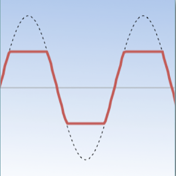

var fuzz = ctx.createScriptProcessor(1024, 1, 1);
fuzz.onaudioprocess = function(event) {
var sin = event.inputBuffer.getChannelData(0);
var sout = event.outputBuffer.getChannelData(0);
var limit = 0.2;
for (var i = 0; i < sin.length; i++) {
var sig = sin[i] * 6; // Boost
if (sig > limit) sig = limit; // Clip
if (sig < -limit) sig = -limit; // Clip
sout[i] = sig;
}
};
